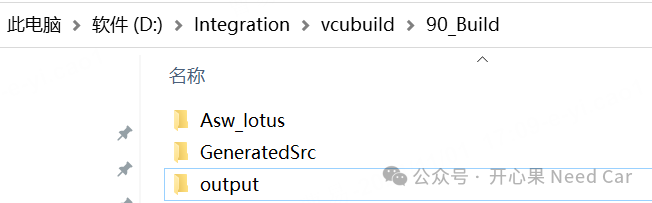
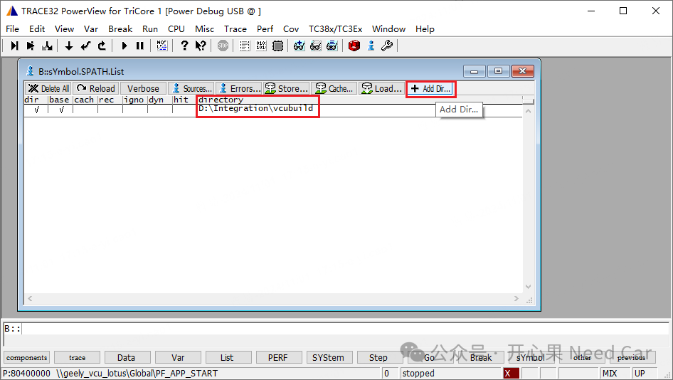
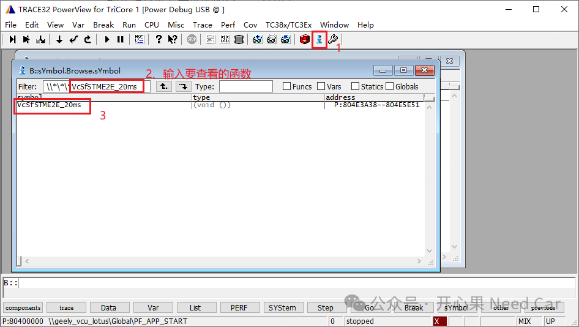
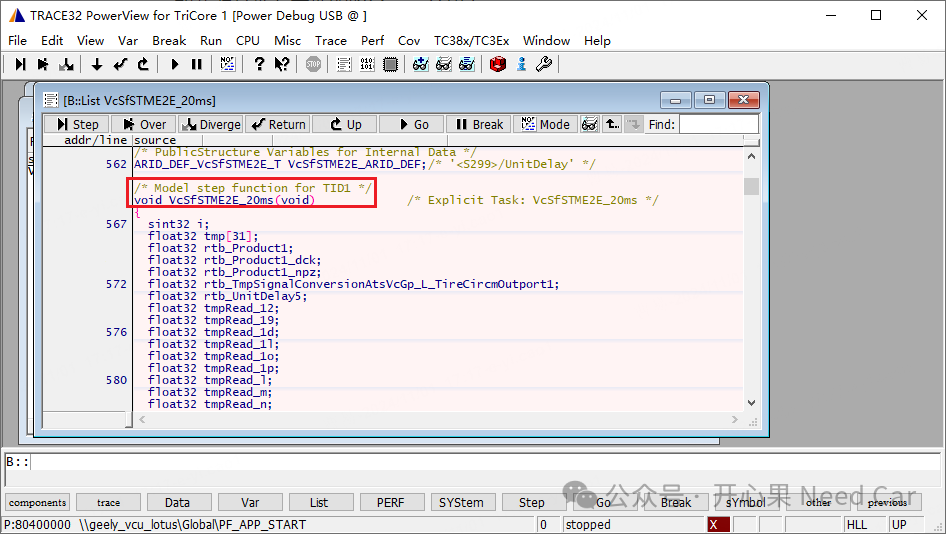
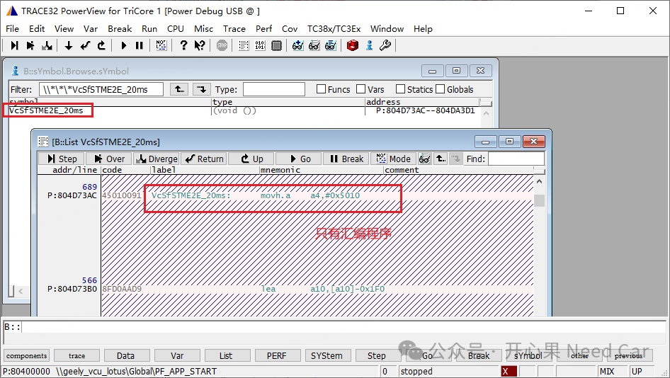

工程开发中，软件开发的同学可能会遇到这样一种场景：第三方编译的镜像文件（eg：*.elf）如何调试呢？其实，这样的场景可能很多：场景一：CICD（Continuous Integration and Continuous Deployment，持续集成与持续部署）开发中，开发工程师为了加速程序编译，会将程序上传到服务器，之后下载服务器编译好的镜像文件（eg：*.elf）进行调试；
场景二：遇到工程Bug，多成员协调排查时，工程师A编译好的镜像文件给到工程师B，由工程师B调试，确认问题点；
所以，面对如上的场景，如何将本地的源文件（eg：*.c）与镜像文件关联起来，实现白盒调试呢？本文，基于Lauterbach讨论：如何用第三方镜像文件，通过本地的源文件进行白盒调试。使用本地的源文件进行白盒调试的关键是保持本地源文件路径与镜像文件（eg：*.elf）编译时的路径一致。
D:/Integration/vcubuild/90_Build/output/Final_Products/*.elf

为了实现白盒调试，调试者的源文件结构需要和第三方的编译环境文件结构保持一致。获取到第三方的镜像文件（eg：*.elf）以后即可烧录程序，同时，添加文件搜索路径，具体操作如下：加载源文件在本地的搜索路径，示意如下：



如果镜像文件（eg：*.elf）和调试者本地的源文件路径不一致，那么，对应的函数只显示汇编程序，示意如下：
提示：只要调试者的源文件结构路径与编译者文件结构保持一致，调试者加载的镜像文件（eg：*.elf）路径不做约束，均可实现白盒调试。
点击下方关注，一起聊聊Autosar/嵌入式，如果需要，联系作者进群，给你更专业的解答